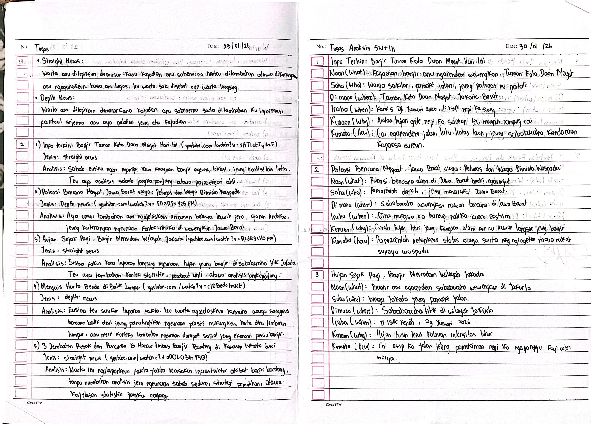
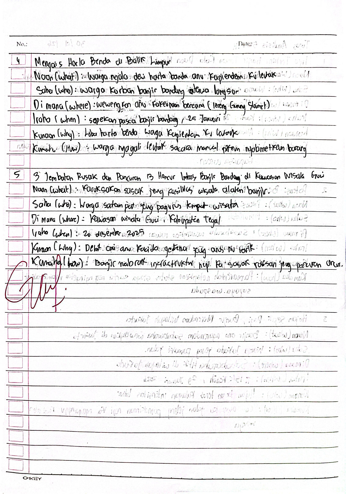

Rhain Pelangi XI-1
Laporan informasi tina peristiwa atawa kajadian anu sipatna penting,
ngirut(menarik), jeung anyar(aktual) pikeun masarakat rea, dipublikasikeun dina kalawarta
(media massa), sarta faktual dumasar kana kanyataan(fakta).
Nu sok nyieun warta : wartawan, jurnalis.
- Straight News : Warta anu ditepikeun dumasar kana kajadian anu sabenerna henteu ditambahan atawa dikurangan,
anu ngagunakeun basa anu lugas. Ieu warta sok disebut oge warta langsung.
- Depth News : Warta anu ditepikeun dumasar kana kajadian anu sabenerna sarta ditambahan ku informasi faktual
sejenna anu aya patalina jeung eta kajadian.
1. Info terkini Banjir Taman Kota Daan Mogot Hari ini
Jenis : Straight News
Analisis : Sabab eusina ngan nyampekeun kaayaan banjir ayeuna, lokasi, jeung kondisi lalu lintas.
Teu aya analisis sabab jangka panjang atawa pamadegan ahli.
2. Potensi Bencana Menguat, Jawa Barat siaga : Petugas dan Warga Diminta Waspada
Jenis : Depth News
Analisis : Aya unsur tambahan anu ngajelaskeun ancaman bahaya leuwih jero, ajakan tindakan, jeung katerangan ngeunaan
kontek risiko diwewengkon Jawa Barat.
3. Hujan Sejak Pagi, Banjir Merendam Wilayah Jakarta
Jenis : Straight News
Analisis : Eusina fokus kana lapangan langsung ngeunaan hujan jeung banjir disababaraha titik Jakarta.
Teu aya tambahan kontek statistik, pendapat ahli, atawaa analisis jangka panjang.
4. Mengais harta Benda di Balik Lumpur
Jenis : Depth News
Analisis : Eusina teu saukur laporan faktra. Ieu warta ngajelaskeun kumaha warga sanggeus Bencana
balik deui jeung paralungtikan ngeunaan proses mukangkeun harta dina timbunan lumpur,
anu mere konteks tambahan ngeunaan dampak sosial jeung ekonomi pasca banjir.
5. 3 Jembatan Rusak dan Pancuran 13 Hancur Imbas Banjir Bandang di Kawasan Wisata Guci
Jenis : Straight News
Analisis : Warta ieu ngalaporkeun fakta-fakta karusakan infrastruktur akibat banjir bandang, tanpa nambihan
analisis jero ngeunaan sabab, strategi pamulihan, atawa kajelasan statistik jangka panjang.
1. Info terkini Banjir Taman Kota Daan Mogot Hari ini
Naon (What) : Kajadian banjir anu ngarendem wewengkon Taman kota Daan Magot
Saha (Who) : Warga sakitar, pamake jalan, jeung patugas anu patali
Di mana (Where) : Taman Kota Daan Mogot, Jakarta Barat.
Iraha (When) : Kamis 29 Januari 2026, ti isuk nepi ka siang
Kunaon (Why) : Alatan hujan gede nepi ka solokan teu mampuh nampung cai
Kumaha (How) : Cai ngarendem jalan, lalu lintas laun, jeung sababaraha kendaraan kapaksa eureun
2. Potensi Bencana Menguat, Jawa Barat siaga : Petugas dan Warga Diminta Waspada
Naon (What) : Potensi bencana alam di Jawa Barat beuki ngaronjat
Saha (Who) : Pamarentah daerah, jeung masarakat Jawa Barat
Di mana (Where) : Sababaraha wewengkon rawan bencana di Jawa Barat
Iraha (When) : Dina mangsa ka hareup nalika cuaca ekstrim
Kunaon (Why) : Curah hujan luhur jeung kaayaan alam nu rawan longsor jeung banjir
Kumaha (How) : Pamarentah netepkeun status siaga sarta ngingetan masarakat supaya waspada
3. Hujan Sejak Pagi, Banjir Merendam Wilayah Jakarta
Naon (What) : Banjir anu ngarendem sababaraha wewengkon di Jakarta
Saha (Who) : Warga Jakarta jeung pamake jalan
Di mana (Where) : Sababaraha titik di wilayah Jakarta
Iraha (When) : Ti isuk keneh, 29 Januari 2026
Kunaon (Why) : Hujan turun terus kalayan intensitas luhur
Kumaha (How) : Cai asup ka jalan jeung pamukiman nepi ka ngaganggu kagiatan warga
4. Mengais harta Benda di Balik Lumpur
Naon (What) : Warga ngala deui harta banda anu kapienden ku leutak
Saha (Who) : Warga korban banjir bandang atawa longsor
Di mana (Where) : Wewengkon anu kakeunaan bencana (lereng Gunung Slamet)
Iraha (When) : Sapekan pasca banjir bandang, 25 Januari
Kunaon (Why) : Loba harta benda warga kapienden ku leutak
Kumaha (How) : Warga ngagali leutak sacara manual pikeun nyalametkeun barang
5. 3 Jembatan Rusak dan Pancuran 13 Hancur Imbas Banjir Bandang di Kawasan Wisata Guci
Naon (What) : Karuksakan sasak jeung fasilitas wisata alatan banjir
Saha (Who) : Warga satempat jeung pangurus tempat wisata
Di mana (Where) : Kawasan wisata Guci, Kabupaten Tegal
Iraha (When) : 20 Desember 2025
Kunaon (Why) : Debit cai anu kacida gedena jeung arus nu tarik
Kumaha (How) : Banjir nabrak infrastruktur nepi ka sasak ruksak jeung pancuran ancur.

